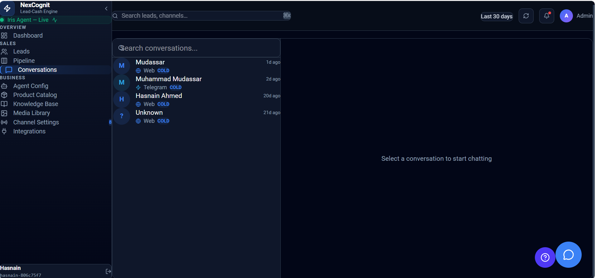

Conversations
The Conversations page is the central place to view and manage customer chats from connected channels in NexCognit.
How the Conversations page works
Use the Conversations page to monitor incoming customer messages, review message history, and respond manually when needed. Messages are gathered from the channels connected to your NexCognit workspace and displayed in one place.
Main UI sections
- Search: Search conversations by customer name, phone number, or email.
- Conversation list: View the list of active customer conversations from connected channels.
- Chat view: Open a selected conversation to review the full message history.
- Manual reply: Type a reply and send it from the dashboard back to the customer.
- Channel behavior: Replies are sent through the same channel the customer used, such as WhatsApp, Telegram, Facebook, Instagram, or website chat.
- Refresh behavior: New messages are checked automatically every 15 seconds, and users can also refresh manually.
Conversation screenshot
The screenshot below shows the Conversations view in NexCognit.

Things to know
- Search supports customer name, phone number, and email.
- Messages do not appear instantly like a mobile chat app; the page refreshes periodically.
- Manual replies are sent through the original customer channel.